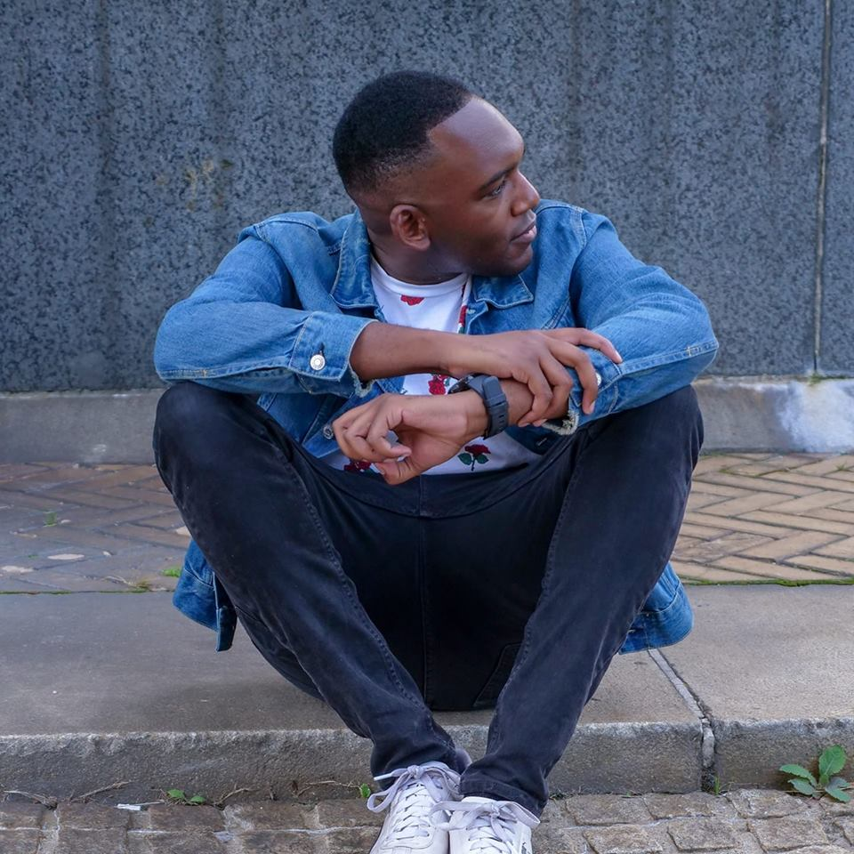

Dwayne Uzoaru is a storyteller and filmmaker. His story began 12 years ago when he was 10 years old, it was at
this age where he received something that changed his life. Dwayne had received his first video camera, and at
that very moment fell in love with the art of video. Ever since that fateful day, he has been obsessed with
making creative content such as documentaries, music videos, and narrative short films.
Now, as an adult version of himself, he has made it his mission to turn anything and everything he captures on
video into a story that could be shared with the world.
Dwayne graduated from Montclair State University with a B.A in Television and Digital Media and has also
interned and worked at a wide variety of production companies and media organizations such as CBS, NBC, and The
Wendy Williams show. Currently, he is serving as a Coordinating Producer at Nameless Network.